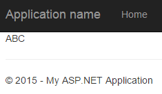
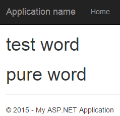
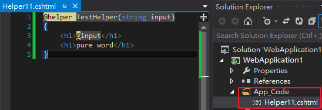
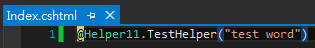
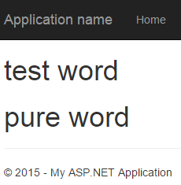

@functions、@section、@helper method的使用
一、@functions的使用
@functions{
string ConvertUpper(string letter)
{
return letter.ToUpper();
}
}
@ConvertUpper("abc")
利用@functiions關鍵字來宣告一個專給View呼叫的function，
然後將輸出也秀回在View上，如圖

二、@section的使用
用法請參考主版頁面與 RenderSection
三、@helper method的使用
@helper TestHelper(string input)
{
<h1>@input</h1>
<h1>pure word</h1>
}
@TestHelper("test word")
此View利用呼叫@helper method，來秀出帶有樣式的文字，如圖

上一個例子只能在原本的view template呼叫@helper method，
那我們希望能在其他view template也可以使用這方便的@helper method要如何做？
承上一個例子，@helper method的內容移置專案根目錄手動新增的App_Code資料夾，
檔案名稱和內容如下圖

此App_Code資料夾就是任何一個view template都可以叫用，
於任一個view template裡呼叫@helper method的方式如下

執行畫面

代表該@helper method已成功移植至App_Code資料夾
另外要注意的是，
@helper method裡可以使用ASP.NET MVC Html helper methods，如Html.ActionLink()，
但是該@helper method移到App_Code資料夾之後就無法使用ASP.NET MVC Html helper methods，
這個issue之後會改進嗎？請參考ASP.NET MVC 3 and the @helper syntax within Razor。
我個人在想自訂Html helper應該可以解決以上需求，
缺點就是在設計html原始碼時，並不是那麼地直覺。
四、差異
經由以上說明比較三者的最大的差異為
由@functions所宣告的內容只能放入C#程式；
由@section所宣告的內容只能RenderSection放入html程式碼；
由@helper所宣告的內容擁有部分@functions與@section的特性，
也就是說@helper可以封裝一段Razor語法，
但請注意@helper特性並不完全等於@functions + @section。
參考資料：